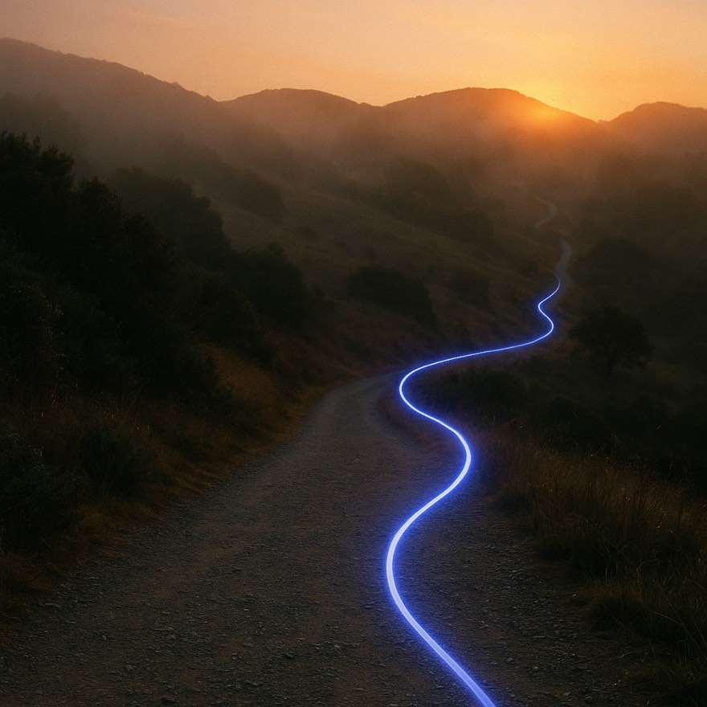
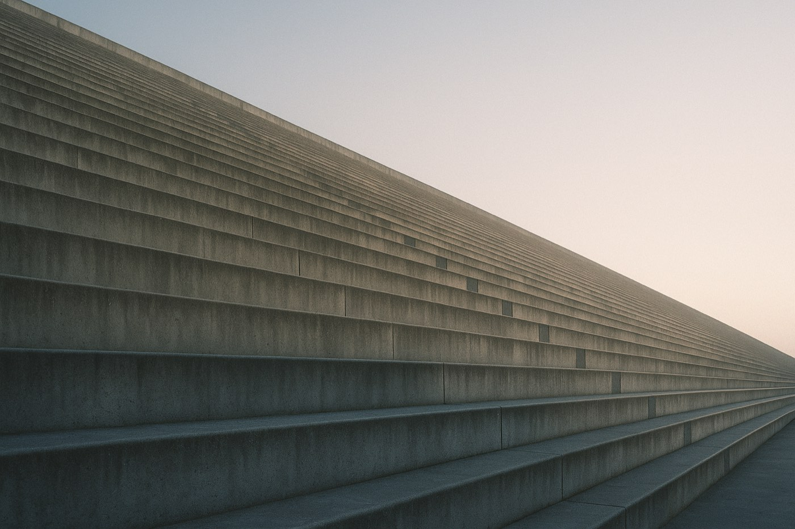
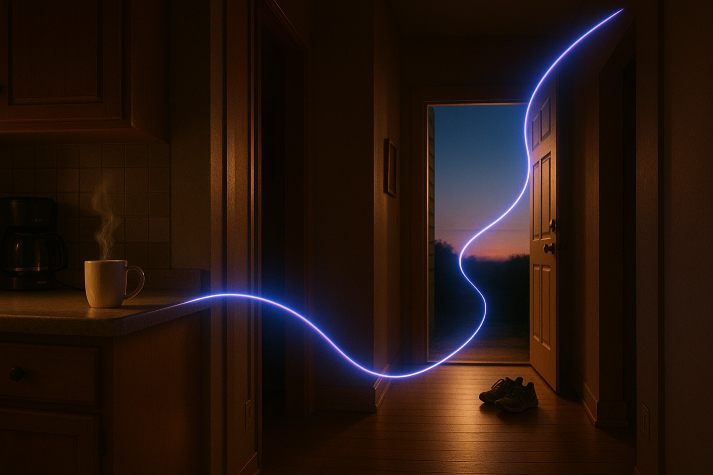
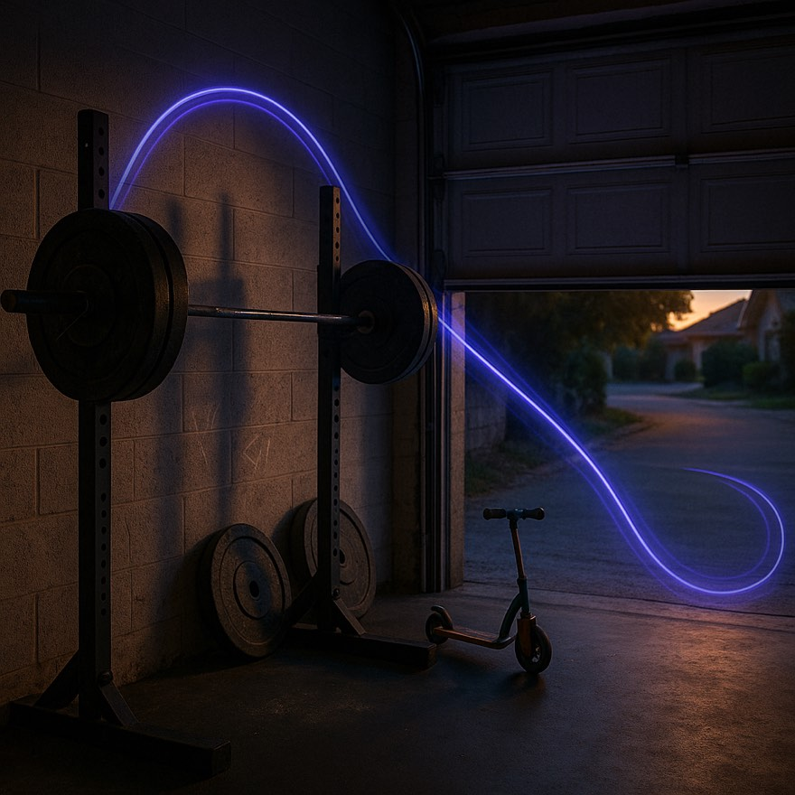
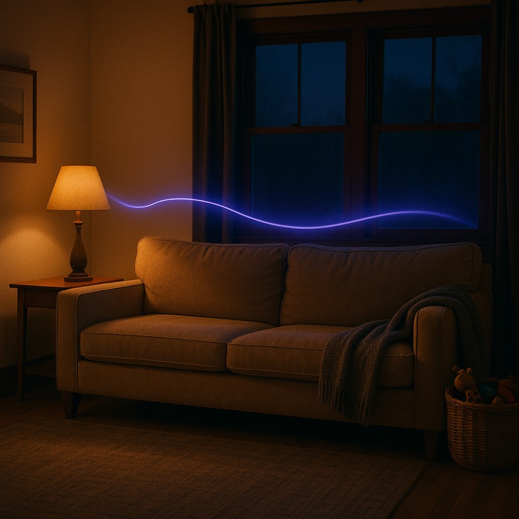
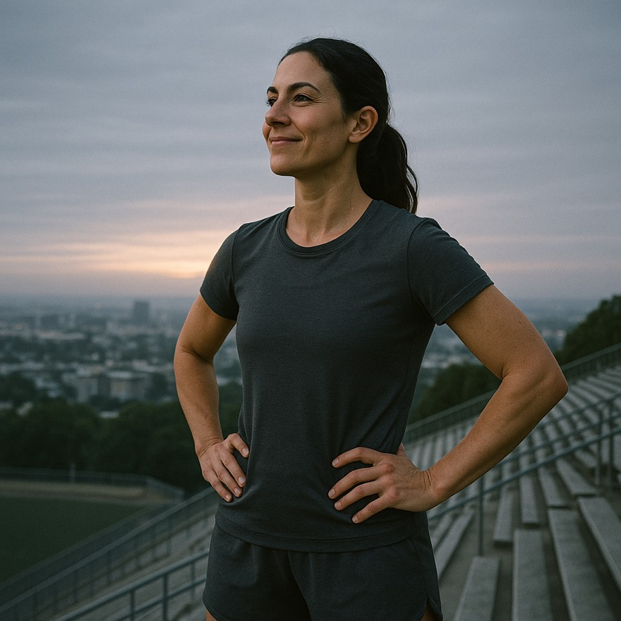

Film for the life, graphics for the proof, photography for the in-between. One warm system where every medium does the job it's best at.
Find your pathway →
07:10 · the trailThe A/C palette carrying B's ambition. Bone ground, racing green, sienna and amber. Cabinet Grotesk display with Geist Mono data. The signature is the mixed-media collage: film tiles, photographic tiles, and live-drawn instruments share one grid, each captioned by the hour of life it belongs to.
The clips here are free Pexels placeholders served from our own domain. For launch: Adobe Stock, warm grade, real bodies of different builds, faces incidental. One hero film plus four tile loops covers the whole site.
It keeps the honesty devices as graphics, the warmth as ground, and lets film do the emotional lifting. No single-reference genre to be compared against, which is what a first-of-its-kind brand should feel like.
Physician-guided performance pathways
A 12-week arc with a physician reading every intake, two scheduled checkpoints, and nothing renewing on autopilot. You pay when you're approved, not before.
Find your pathway→
FILM SLOT · morning routine, natural lightFunction Health lens, warmed. Bone ground, near-black ink, one burnt-sienna accent. Geist + Geist Mono. The signature device is the ledger: every promise stated as a countable fact with a number beside it. Precision as warmth, because precision is what honesty looks like.
Adobe Stock: single continuous shot, one person's ordinary morning executed well. Kitchen to running shoes to door. Natural light, no gym-brand gloss, no faces to camera. 8 to 12 seconds, loopable.
Nobody in the pathway category talks like an honest invoice. It converts the no-prepay and refund-if-declined policies from footnotes into the brand itself.

Physician-guided pathways for the hours that matter: the early lift, the long day, the evening you still show up for. Reviewed in 24 hours. Nothing renews on autopilot.
Start your pathway →

Eight Sleep lens, domesticated. Near-black cinema, monumental Satoshi 900, and the indigo Lifeline as the only light source. The site is a film: full-bleed scenes of real hours in a real life, chaptered by timestamps. Scroll is the edit.
Adobe Stock: warm-lit domestic night and dawn scenes. Garage gym at first light, kitchen before the house wakes, living room at 9pm. Slow push-ins, real bodies of different builds, faces incidental. The Lifeline gets composited as a light ribbon in post.
Video-first, which is now on the table. Dark cinema reads premium instantly, and no telehealth player owns it. The existing Lifeline image set already lives in this world.

Three questions, thirty seconds. A physician reviews every intake within a day, and it costs nothing to be reviewed.
Member stories, training notes, and the honest version of what 12 weeks actually feels like. Written like a club newsletter, not a clinic pamphlet.
Tracksmith lens, unisex. Warm paper, racing green, amber accents, Cabinet Grotesk at editorial scale. It feels like belonging to something: a masthead, an est. date, a journal. Membership energy without a membership fee.
Adobe Stock: film-grain athletic-life footage. A lifter chalking up in a home gym, a mom lacing shoes at dawn, a trailhead exhale. 16mm texture, warm grade, the feel of a club film rather than an ad.
Solves the lifter-and-suburban-mom brief through belonging rather than demographics. Editorial warmth ages well and photographs cheaply.